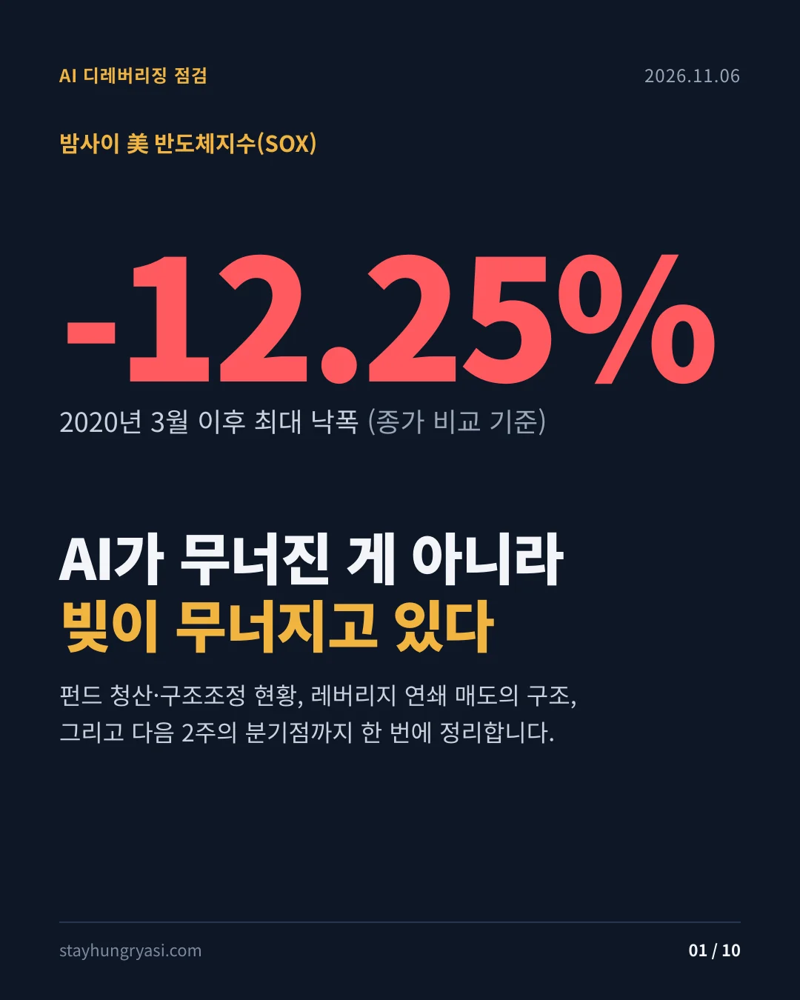
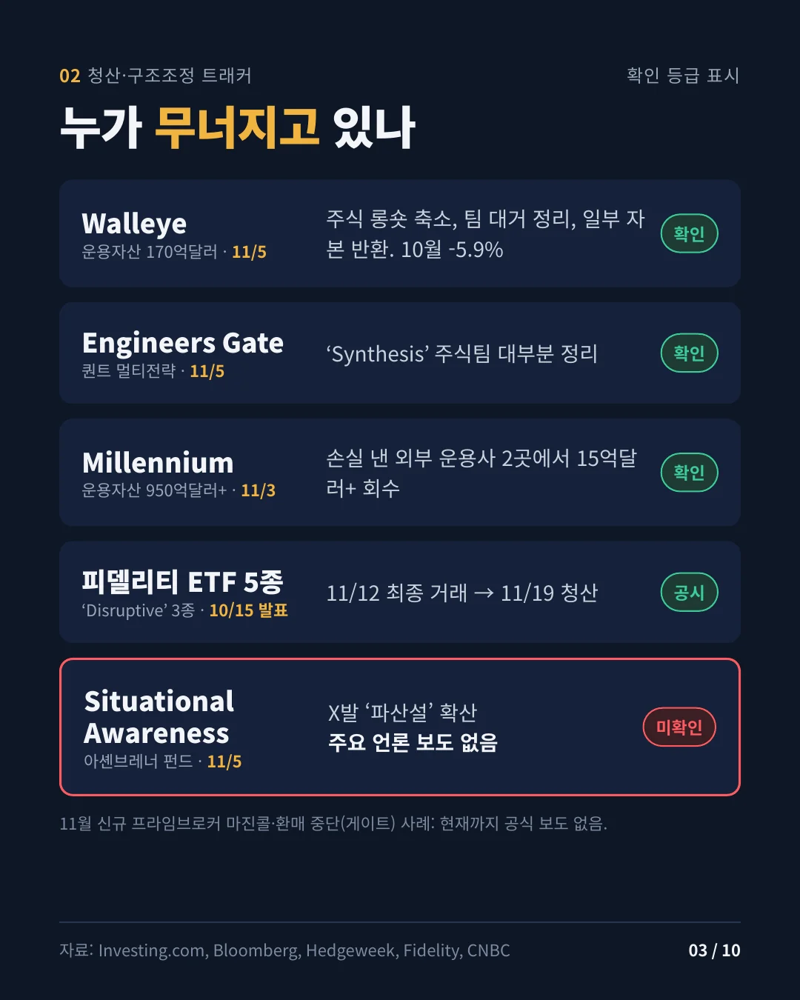
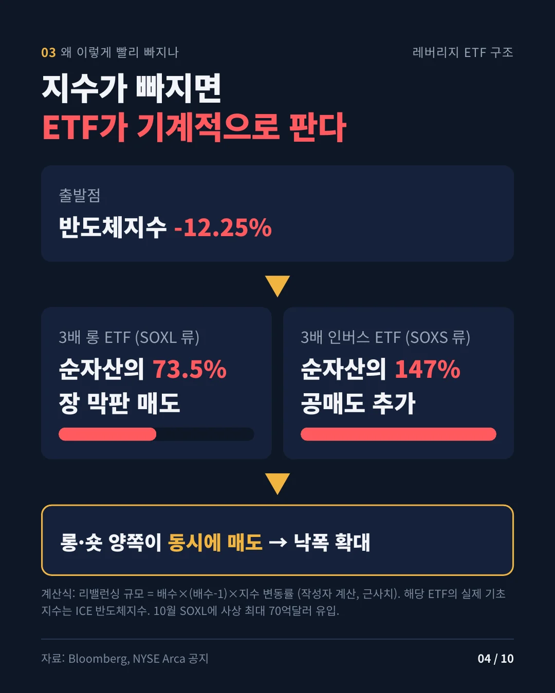
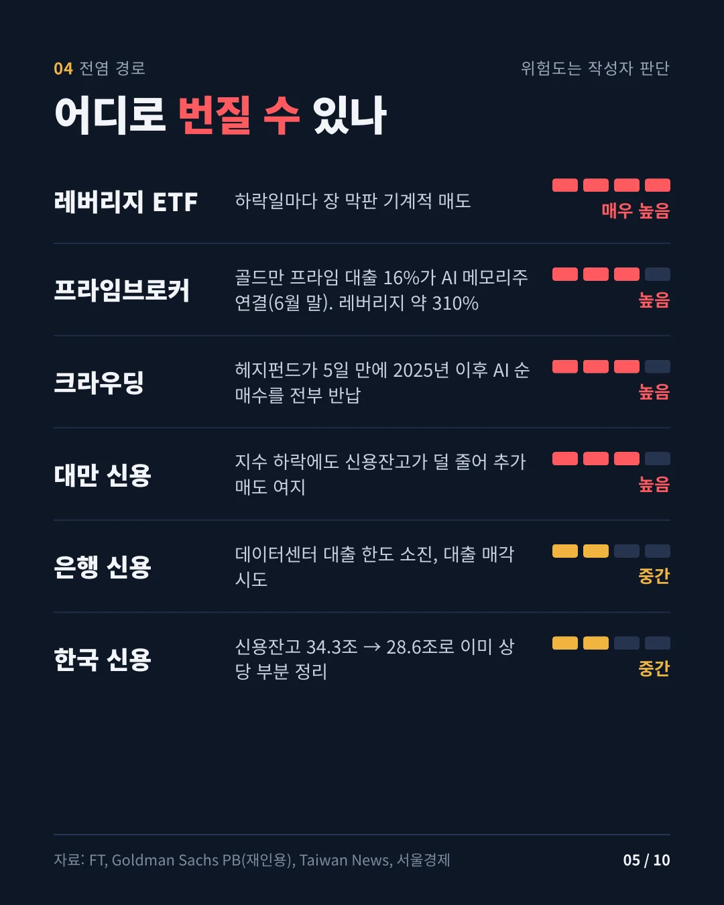
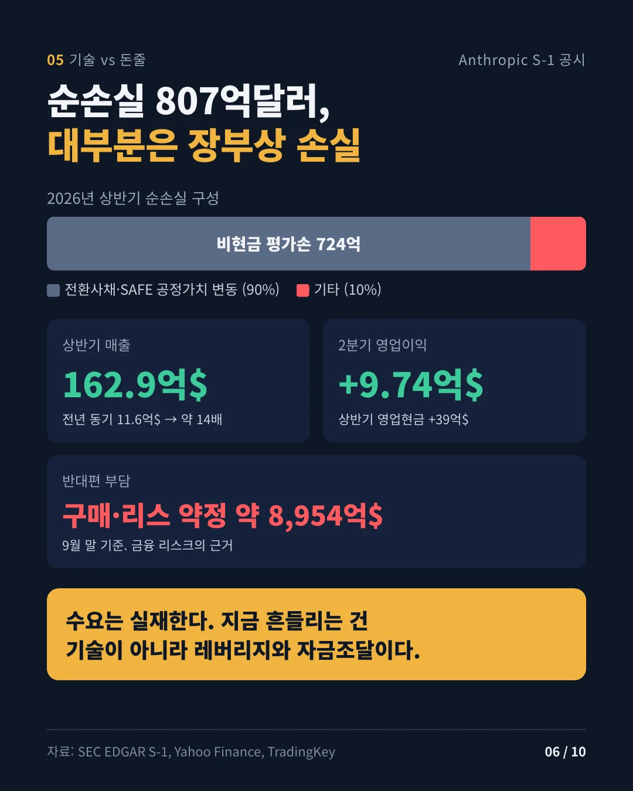
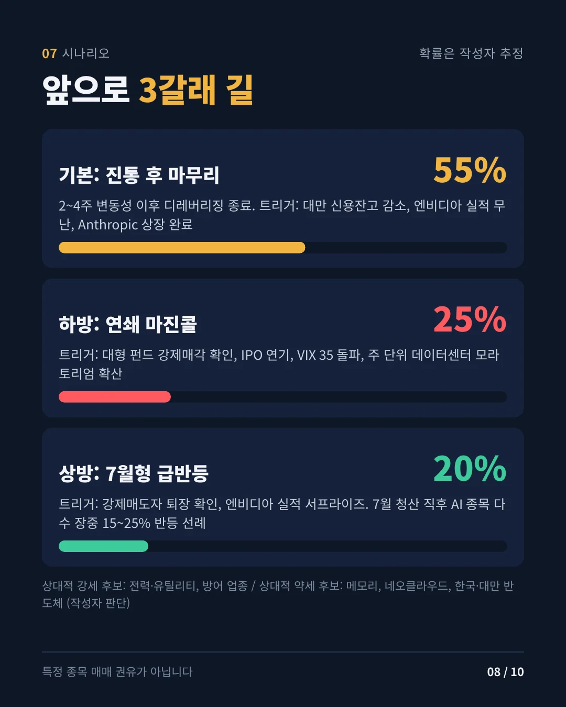
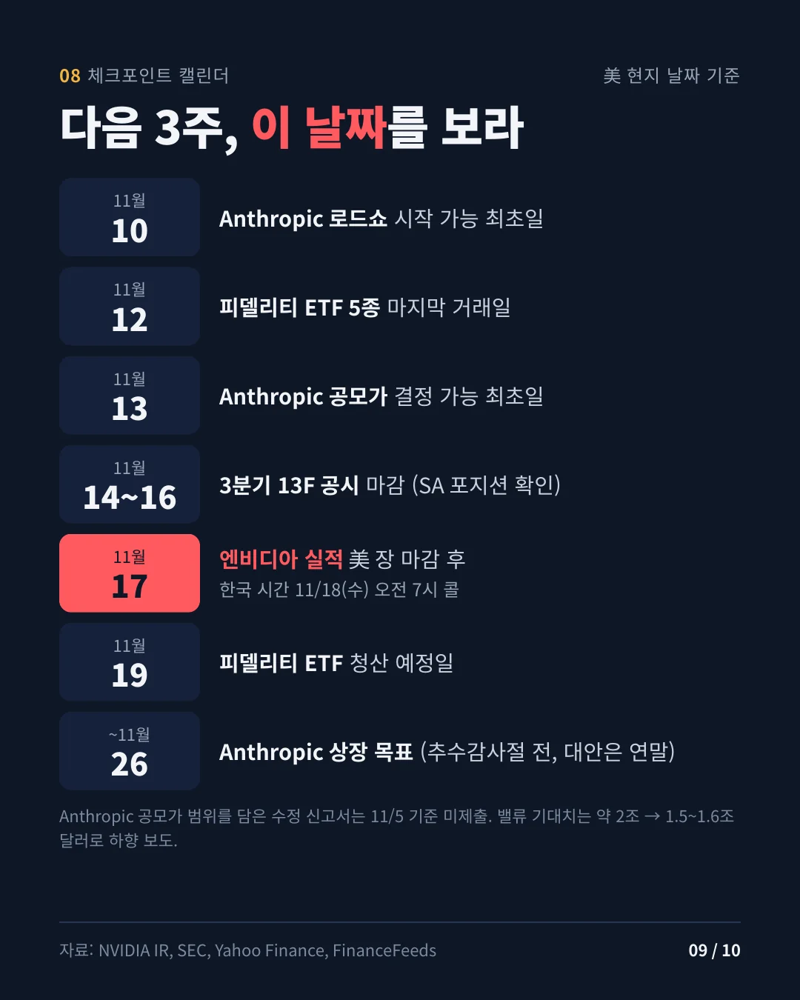

데이터 기준 2026년 11월 5일 미국 정규장 종가 · 작성 2026년 11월 6일 07시(한국 시간) · stayhungryasi.com
표기 규칙: 수치는 링크한 출처 기준 사실이다. '추정'은 작성자 판단, '미확인'은 1차 언론으로 확인하지 못한 사항이다. 초안 작성 뒤 약 40개 항목을 출처와 다시 대조했고, 정정한 내용은 마지막 섹션에 모았다.
이해충돌 고지: 이 리서치는 앤트로픽의 AI(Claude)를 써서 작성했고, 본문에 앤트로픽 S-1과 IPO 일정이 등장한다. 투자 권유가 아니다.
핵심만 10장으로 요약했다. 이미지를 누르면 크게 볼 수 있다.
| 지표 | 종가 | 등락 | 비고 |
|---|---|---|---|
| S&P 500 | 7,353.73 | -4.36% | 2025년 4월 '해방의 날' 관세 충격 이후 최악의 하루 |
| 나스닥 종합 | 24,315.00 | -5.52% | 고점 대비 -11.9%로 조정 구간. 일부 매체는 -5.2%로 집계 |
| 다우 | 51,523.06 | -3.44% | -1,833포인트 |
| 필라델피아 반도체(SOX) | — | -12.25% | 6/5의 -10.3%보다 커 2020년 3월 이후 최대 낙폭(추정, 종가 비교) |
| VIX | 28.18 | +69.66% | |
| 미국 10년물 | 4.837% | -5.7bp | |
| WTI(12월물) | 91.06 | +3.34% | |
| 비트코인 | 75,702 | -5.56% | 24시간 거래 자산, 조회 시점 기준 |
| 코스피(11/5) | 5,383.80 | -5.28% | 외국인 3조3,928억원 순매도, 개인 2조2,722억원·기관 8,457억원 순매수 |
| 대만 TAIEX(11/5) | 41,574.72 | -3.20% | 7/31 이후 최저. 외국인 NT$1,024.6억 순매도(역대 10위) |
촉매는 민주당의 중간선거 압승(언론 보도 기준)이 부른 AI 데이터센터 규제·과세 우려다. 다만 하루 낙폭의 상당 부분은 펀더멘털보다 수급, 특히 레버리지 포지션의 기계적 정리로 설명된다고 판단한다(추정). 외국인은 11월 첫 4거래일 동안 국내 증시에서 7조9,520억원을 순매도했고, 일평균 매도 강도는 10월의 두 배를 넘었다.
| 펀드(운용자산) | 사건 | 날짜 | 확인 등급 |
|---|---|---|---|
| Walleye Capital (170억달러) | 자체 주식 롱숏 사업 단순화, 해당 부문 리더십·투자팀 상당수 정리, 일부 자본 반환. 10월 -5.9%(2020년 3월 이후 최악의 달) | 11/5 | 언론 확인 |
| Engineers Gate | 정량·펀더멘털 결합 'Synthesis' 주식팀 대부분 정리 | 11/5 | 언론 확인(블룸버그) |
| Millennium (950억달러+) | Troluce에서 10억달러 이상, Axebrook에서 5억달러 레버리지 자본 회수 | 11/3 | 언론 확인(블룸버그) |
| 멀티전략 10월 성과 | Millennium -2.3%, Marshall Wace Eureka -5.4%, ExodusPoint -2.4%, North Rock -2.3% | 10월 | 블룸버그 인용 |
| Situational Awareness (7월 이후 약 100억달러) | 11/5 X(Kalshi 등)에서 '파산' 주장 확산. 7월 마진콜 때 상장주식을 전부 팔았고 그중 약 80%를 시타델이 인수. 9월부터 옵션으로 재진입 | 11/5 | 미확인(SNS) |
| 피델리티 ETF 5종 | Disruptive Finance·Disruptive Medicine·Disruptors·Metaverse·Real Estate ETF 청산. 11/12 최종 거래, 11/19경 청산 | 10/15 발표 | 보도자료 |
| 데이터센터 대출 | 신원 미상의 매도자가 5억달러 규모 데이터센터 대출 매각 시도 | 11/5 | 단일 보도 |
| 한국 개인 신용 | 신용융자 잔고 28조6,446억원(11/4). 10/12의 34조2,887억원에서 약 5.6조원 줄어 3개월 만의 최저 | ~11/4 | 언론 확인 |
| 환매 제한(게이트) | 11월 신규 사례는 찾지 못했다. 참고로 2026년 3월 Blue Owl 사모크레딧 펀드의 무기한 게이트 사례가 있다 | — | — |
| 11월 프라임브로커 마진콜 | 공식 보도 없음. 확인된 보도는 7월 FT 건(골드만·JP모건 추가 담보 요구) | — | 미확인 |
Situational Awareness는 시타델 매각 전 포트폴리오의 약 2/3가 상장주식이었고 나머지는 주로 앤트로픽 지분이었다. 루머가 사실이어도 시장 강제매도 물량은 제한적이고, 이 펀드의 남은 위험은 오히려 앤트로픽 IPO 가격과 연동돼 있다고 본다(추정).
| 경로 | 근거 | 위험도(추정) |
|---|---|---|
| 프라임브로커 | 골드만 프라임 대출의 약 16%가 AI 메모리주에 직접 연결(6월 30일 기준). 헤지펀드 그로스 레버리지는 약 310% | 높음 |
| 쏠림 | 헤지펀드가 5거래일 만에 2025년 이후 AI 순매수를 전부 되돌렸다. 10/22 골드만 헤지펀드 선호주 바스켓 -4.2%는 2011년 이후 최악(2차 출처). 골드만은 언와인드가 끝보다 시작에 가깝다고 봤다 | 높음 |
| 레버리지 ETF | SOXL에 10월 사상 최대 70억달러 유입. 하락일마다 장 막판 리밸런싱 매도가 구조적으로 나온다 | 매우 높음 |
| 은행 신용 | 은행들이 내부 한도에 걸려 데이터센터 대출 위험을 외부로 넘기는 중(FT, 5월). 11/5 데이터센터 대출 매각 시도 | 중간 |
| 한국 | 신용잔고는 줄었지만 대차잔고가 3주 새 6.5% 늘었다(32억7,787만 주). 투자자예탁금 89조2,273억원 | 중간 |
| 대만 | 지수가 빠져도 신용융자 잔고가 크게 줄지 않았다. 추가 강제매도 여지 | 높음 |
레버리지 ETF 리밸런싱 계산(추정). 배수가 L인 ETF는 기초지수가 r만큼 움직이면 순자산의 L×(L-1)×r만큼 노출을 조정해야 한다. 3배 롱 ETF는 6×|r|, 3배 인버스 ETF는 12×|r|다. SOX -12.25%를 넣으면 3배 롱은 순자산의 약 73.5%를 팔아야 하고, 3배 인버스는 순자산의 약 147%만큼 공매도를 늘려야 한다. 롱·숏 레버리지 ETF가 동시에 장 막판 매도를 냈다는 뜻이다. 다만 SOXL·SOXS의 기초지수는 2021년부터 SOX가 아닌 ICE Semiconductor Index라 이 계산은 근사치다.
한국은 7월과 10월 두 차례 반대매매로 개인 레버리지가 상당 부분 정리됐다. 대만은 신용 잔고가 덜 줄어, 단기적으로는 대만 쪽 강제청산 위험이 더 크다고 본다(추정).
페레스 국면: 광란기 말기에서 전환점 초입(추정).
기술 위험과 금융 위험의 분리
| 구분 | 근거 | 판단(추정) |
|---|---|---|
| 기술·수요 | 앤트로픽 S-1: 2026년 상반기 매출 162.9억달러(전년 동기 11.6억달러), 2분기 영업이익 9.74억달러, 상반기 영업현금흐름 +39억달러. 순손실 807억달러 중 724억달러는 전환사채·SAFE 공정가치 변동(비현금) | 수요는 실재 |
| 금융·자금조달 | 펀드 레버리지, 프라임브로커 집중, 은행 데이터센터 대출 한도, 앤트로픽의 9/30 기준 구매·리스 약정 약 8,954억달러, IPO 물량 부담 | 지금의 주된 위험 |
역사적 사례 비교(일반 역사 지식 기반)
| 사례 | 공통점 | 차이점 |
|---|---|---|
| 철도 1847 | 투기 자본이 인프라를 먼저 깔았고, 부분 납입 주식의 추가 납입 요구가 사실상 마진콜 역할을 했다 | 지금의 AI는 이미 큰 매출과 영업이익을 낸다 |
| 광섬유 2000 | 부채로 조달한 설비투자, 과잉 건설 우려 | 하이퍼스케일러의 자체 현금흐름이 탄탄하다 |
| ARK 2021 | 테마 상품 자금 썰물(피델리티 'Disruptive' ETF 청산과 비슷) | 그때는 펀드 레버리지가 없었고, 지금은 펀드 레버리지와 3배 ETF가 겹친다 |
| 시나리오 | 확률 | 트리거 | 상대 강세 / 약세 후보 |
|---|---|---|---|
| 기본: 2~4주 변동성 뒤 디레버리징 마무리 | 55% | 대만 신용잔고 감소, 엔비디아 실적 무난, 앤트로픽 상장 완료 | 강세: 전력·유틸리티, 변동성 전략 / 약세: 네오클라우드 |
| 하방: 연쇄 마진콜 | 25% | 대형 펀드 강제매각 확인, IPO 연기, VIX 35 이상, 주 단위 데이터센터 모라토리엄 확산 | 강세: 국채·금 / 약세: 메모리, 한국·대만 |
| 상방: 7월형 급반등 | 20% | 강제매도자 퇴장 확인, 엔비디아 실적 서프라이즈 | 강세: 반도체 장비·메모리 |
참고로 7월 Situational Awareness 청산 때는 청산 소식 직후 급락했던 AI 종목 다수가 장중 15~25% 급반등했다. 10월에는 에너지·금융과 유틸리티·헬스케어 같은 방어 업종이 견조했고, Walleye의 변동성 사업은 10월에 사상 최고의 달을 기록했다. 특정 종목의 매매 권유가 아니다.
| 날짜(미국) | 이벤트 |
|---|---|
| 11/10(화) | 앤트로픽 로드쇼 시작 가능한 최초일(공개 S-1 후 15일) |
| 11/12(목) | 피델리티 ETF 5종 마지막 거래일 |
| 11/13(금) | 앤트로픽 공모가 결정 가능한 최초일(11/11 SEC 휴무 반영) |
| 11/14(토) | 3분기 13F 마감. 주말이라 규정상 다음 영업일(11/16)까지 공시 가능. SA의 시타델 매각이 처음 반영되는 공시 |
| 11/16(월) | 앤트로픽 상장 가능한 최초일. 보도상 11/16 주간 목표 |
| 11/17(화) | 엔비디아 3분기(FY27) 실적, 미국 장 마감 후 / 한국 시간 11/18(수) 오전 7시 콜 |
| 11/19(목) | 피델리티 ETF 청산 예정일 |
| 11/26(목) 이전 | 앤트로픽 상장 목표(추수감사절 전), 대안은 연말 |
| 12/8~9 | FOMC(복수 2차 출처 기준) |
앤트로픽은 11/2 3분기 실적을 담은 S-1 수정본을 냈지만, 11/5 기준 공모가 범위를 담은 수정본은 아직 없다. 투자자 밸류에이션 기대는 약 2조달러에서 1.5조~1.6조달러로 낮아졌다고 보도됐다.
초안 대비 바로잡은 내용이다. 미확인으로 남은 항목은 Situational Awareness 파산설과 11월 신규 프라임브로커 마진콜 두 가지다.
| 항목 | 초안 | 정정 |
|---|---|---|
| 엔비디아 실적일 | 11/18(추정 사이트 기준) | 11/17(화), 회사 공식 발표(10/28) |
| 앤트로픽 수치 | 순손실과 영업이익이 '상충' | 상충이 아니다. 순손실 대부분이 비현금 공정가치 변동 |
| Engineers Gate | 단일 보도 | 블룸버그 바이라인 기사로 확인 |
| SA 매각 | 상장주식 전부를 시타델에 | 전부 매각, 그중 약 80%를 시타델이 인수 |
| 레버리지 ETF | SOX 기준 약 72% | 기초지수는 ICE 반도체지수, 근사치 약 73.5% |
| 갤럽 71% | 2차 페이지 인용 | 갤럽 원조사(2026년 3월)로 교체 |
| 골드만 16% | 현재형 서술 | 6월 30일 기준 수치로 명시 |
이 판단이 틀릴 수 있는 지점. ① SA 충격이 옵션·사모지분에 한정된다고 봤지만, 비공개 차입이나 사모지분 담보 구조가 있다면 파급이 더 클 수 있다. ② 앤트로픽 영업 흑자는 한 분기 수치이고, 8,954억달러 약정 부담을 생각하면 지속성은 아직 검증되지 않았다. ③ 연방 차원의 '속도 조절'로 봤지만, 주 단위 데이터센터 모라토리엄이 퍼지면 하방 확률이 올라간다.
stayhungryasi.com · 정보 제공 목적의 리서치이며 투자 권유가 아니다. 투자 판단과 책임은 투자자 본인에게 있다.